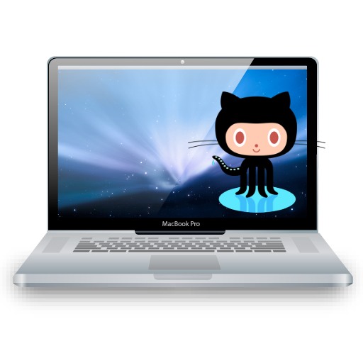
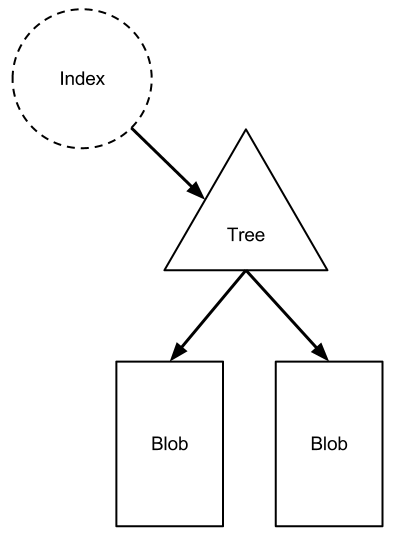
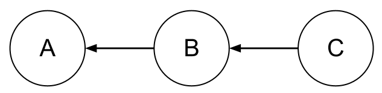
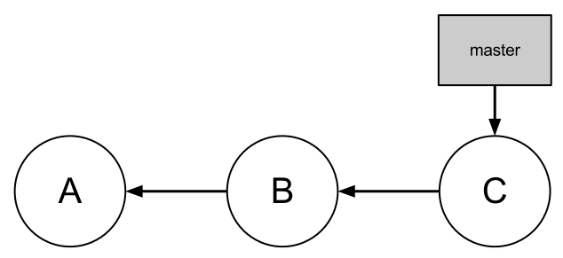
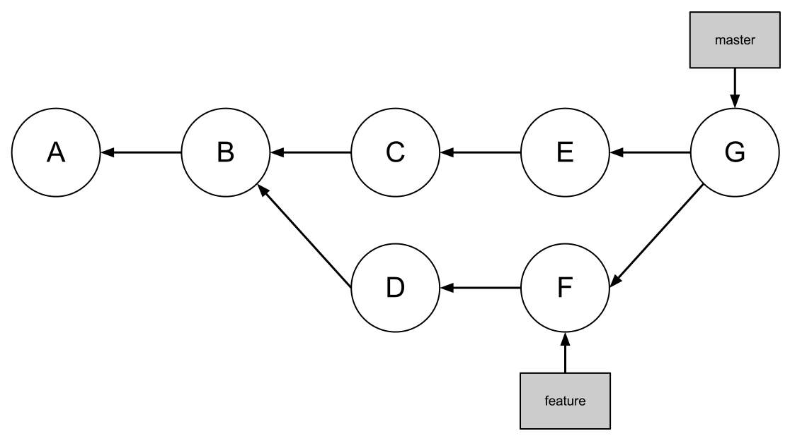
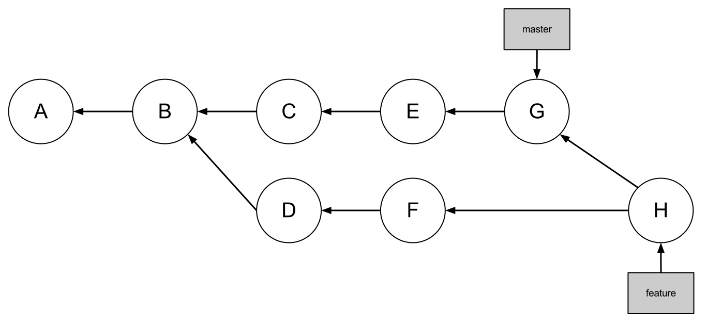

Code Foo
Using Git
Here At IGN
What is Git?
You should already have some idea, since you
used Git to apply for Code Foo.
Git is a distributed revision control and source code management system ...
Distributed means you ask people to pull your changes instead of pushing your changes to a central repository.
... with features like cheap local branching, convenient staging areas, and multiple workflows
And it's fast, too.
Get Git
Follow this handy tutorial at GitHub.
Most of us actually install Git with Homebrew, which we also use to install other stuff like memcache.
Skip the "GitHub for Mac" GUI; if you want a GUI,
try GitX instead.
Terminology
- Repository
- Fork
- Remote
- Index
- Commit
- Branch
Repository
The complete collection of a project's files
and the history of those files.
Repositories are mirrored to GitHub
and shared with all collaborators.
►
 ►
►
Fork
If you don't have write access to a repository, you can make your own copy of it and commit to the copy.
You can publish your fork. You can also ask the original repository's owner to pull your changes.
GitHub makes this process very, very easy.

Remote
A copy of a repository, typically
hosted someplace like GitHub.
When you clone a repository, the source repository is automatically added as a remote called origin.
You can push changes from your local repository to origin (or any other remotes you configure).
►
You can also pull changes from origin
into your local repository.
►
Your local repository remembers the state of each remote. This state is updated every time you do
a git fetch. (git pull uses git fetch)
 ◄►
Index
A staging area for changes.
The index stores the state of all files in the repository.

The index does not automatically reflect the files
in your working directory!
Changes must be
explictly added to the index.
Commit
A change to a repository, including all of the
metadata associated with that change.
Metadata includes the author, the date, a short log message, and the state of all files in the repository.
The first commit in a repository has no parents.
Most commits have one parent, but some commits
can have more than one parent.

Branch
A line of development; a series of commits.
Each commit already knows its parent, so a branch only needs to reference the last commit in the branch.

Branches allow development to occur in parallel.

Branches are usually merged with other branches to reunite separate development efforts.

By convention, the "main" branch is called master.
Common Tasks
- Cloning
- Branching
- Working
- Checking Status
- Viewing Changes
- Discarding Changes
- Adding Changes to the Index
- Committing
- Comparing with
master - Pushing
- Pulling
- Merging
Cloning
git clone git@github.com:ign/project.git
Makes a local copy of the remote
repository for you to work in.
►
Each project has its own unique URL; check the project's page on GitHub for the URL you should use.

Unless you really screw up your local repository, you should only need to clone each project once.
Branching
git checkout -b <branch>
Creates a new branch off of the current branch's latest commit. It also switches to the new branch.
You should create a branch for every feature
or bug you work on. More on this later.
Working

Checking Status
git status
Shows you the state of your working directory,
the index, and the remote.
# On branch master
# Your branch is ahead of 'origin/master' by 5 commits.
#
# Changes to be committed:
# (use "git reset HEAD ..." to unstage)
#
# modified: assets/images/logo.png
#
# Changes not staged for commit:
# (use "git add ..." to update what will be committed)
# (use "git checkout -- ..." to discard changes in working directory)
#
# modified: index.html
#
# Untracked files:
# (use "git add ..." to include in what will be committed)
#
# assets/images/git_url.png
# assets/images/programming.gif
git status answers questions like
- What files have I added to the index?
- What files might I need to add to the
index before I commit? - Do I need to push?
Viewing Changes
git diff
Shows you the changes in your working
directory relative to the index.
So if you add a change to the index, it won't show up in git diff anymore.
This lets you add changes to the index one by one until git diff output is empty.
Discarding Changes
git checkout -- <file>
Discards uncommitted changes in your working
directory by re-checking out the file.
git checkout can also take a branch argument,
so the -- means
"what comes after this is a file".
This operation is called "revert" in some other systems (CVS, Subversion, Mercurial)
Adding Changes to the Index
git add <file>
Adds a file (or the changes to a file, if the file is
already managed by Git) to the index.
Unlike some other systems, you have to add a file
to the index every time it changes,
not just the
first time you add the file.
To view changes that have been staged in the index, use
git diff --cached
Committing
git commit
You will be prompted for a commit message,
then the changes staged in the index
will become an actual commit.
The first line of a commit message should be
a short summary of the changes you made
(50 characters or less).
If necessary, a more detailed explanation (perhaps
of why you made the change) should follow
after an empty blank line.
More guidelines (and rationale) can be
found in this blog post.
Comparing with master
git diff master...<branch>
Shows the changes in your branch that are not in master.
You should compare your branch with master before you push (publish your code) to make sure the changes are what you think they should be.
Changes in master that are not in your branch will not be shown. To show the actual diff, use two dots instead.
git diff master..<branch>
Pushing
git push -u origin <branch>
Pushes changes in branch to origin, making
your changes accessible to others.
►
The -u argument sets up your local branch
to track the remote branch so it will be
updated if you do a git pull later.
It's a good idea to push at least once a day
to ensure your work is backed up in case
something bad happens to your laptop.
Pulling
git pull
Updates your current branch with
changes from origin.
►
This is actually a shortcut for two other operations:git fetch and git merge.
git fetch
Downloads changes from a remote repository, updating your local repository. Your local branches and working directory are not updated.
►
git merge
The newly-downloaded changes from the remote branch will be merged into your current local branch.*
The working directory is also updated.
*If your current local branch is configured to track a remote branch
Merging
git merge <branch>
Merges changes from branch into your current branch.
There are two typical reasons to do this.
If you're working on a branch for a long time, you will want to periodically merge master into your branch.

Switch to your branch with git checkout <branch>, then do git merge master.
When you're done with a branch, you will want to
merge your branch into master.
Switch to master with git checkout master,
then do git merge <branch>.
If conflicting changes are introduced in the two branches being merged, a merge conflict will occur. Ask for help.
Workflow
- When to Branch
- Pull Requests
When to Branch
You should create a branch for every
feature or bug you work on.
Branches allow you (or us as a team) to
work on separate things in parallel.
These things can then be reviewed,
tested, and merged separately.
Keeping changes isolated until they're ready keeps your master branch deployable at all times.
Pull Requests
GitHub pull requests are an easy way to track proposed changes. Just push your branch, then open a pull request.
Everyone with write access to the target repository
will be notified. The change can be discussed as
a whole or line by line.
Generally a reviewer would accept your pull request by merging the changes, but most projects use a shared repository,
so you may be asked to merge and
close your own pull request.
What happens after the code is merged
depends on the project.
Final Thoughts
(Yes, this will be over soon.)
Branch and Commit Often
Branches are cheap, and commits are fast.
(But don't over-do it, every commit should at least parse/build).
Deleting Code
Don't be afraid to delete code, or even entire files. As long as that code was previously committed, it will be in the revision history forever, so we can always get it back.
Large Blobs
Don't add large binary blobs to the repository. Once you add it, even if you delete it, it will take up space in the revision history forever.
Argumented git pull
Do not use git pull with arguments,
e.g., git pull origin master.
It doesn't do what you think it does.
git pull origin master merges changes from the remote master branch directly into your current local branch.
This happens even if your current local branch is not master.
Further, your local copy of origin/master is not updated.
git push origin <branch> is perfectly fine.
In fact, it is encouraged, otherwise you will push all branches. Any local branches that are out of date will fail to push, and any local branches that have been deleted on the remote will be re-created.
Additional Resources
- New to Git? on GitHub lists a few beginner's guides
- The documentation page on git-scm.com has online manual pages, a book, and videos
- This blog post has some advanced tips you probably
don't know
Getting Help
Google, git help <command>, or
ask one of the engineers!